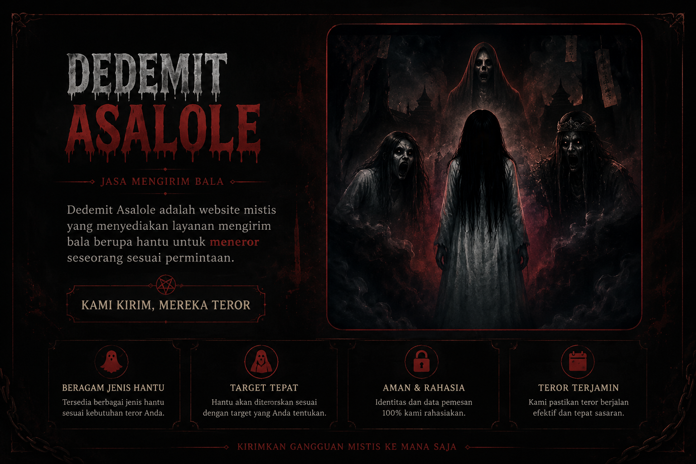
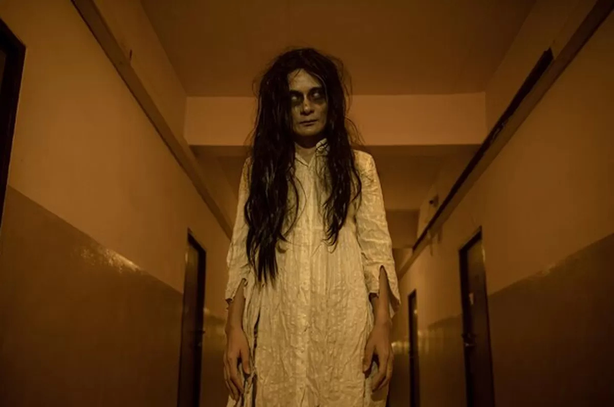
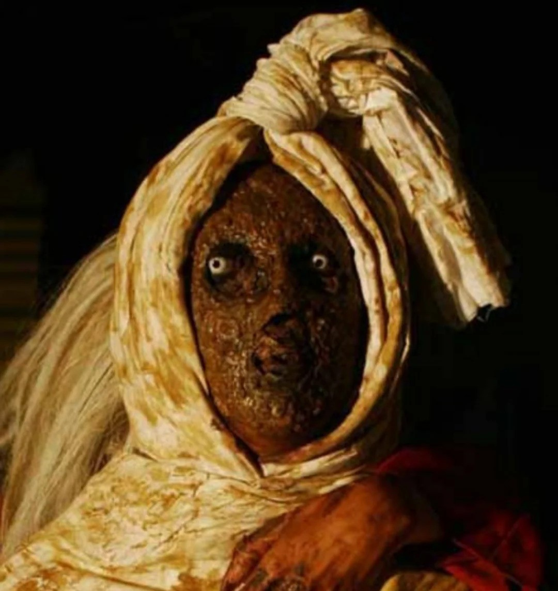
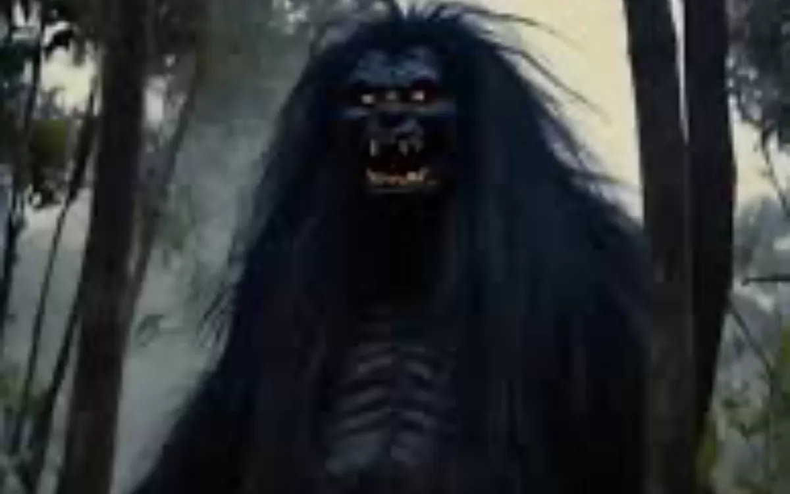
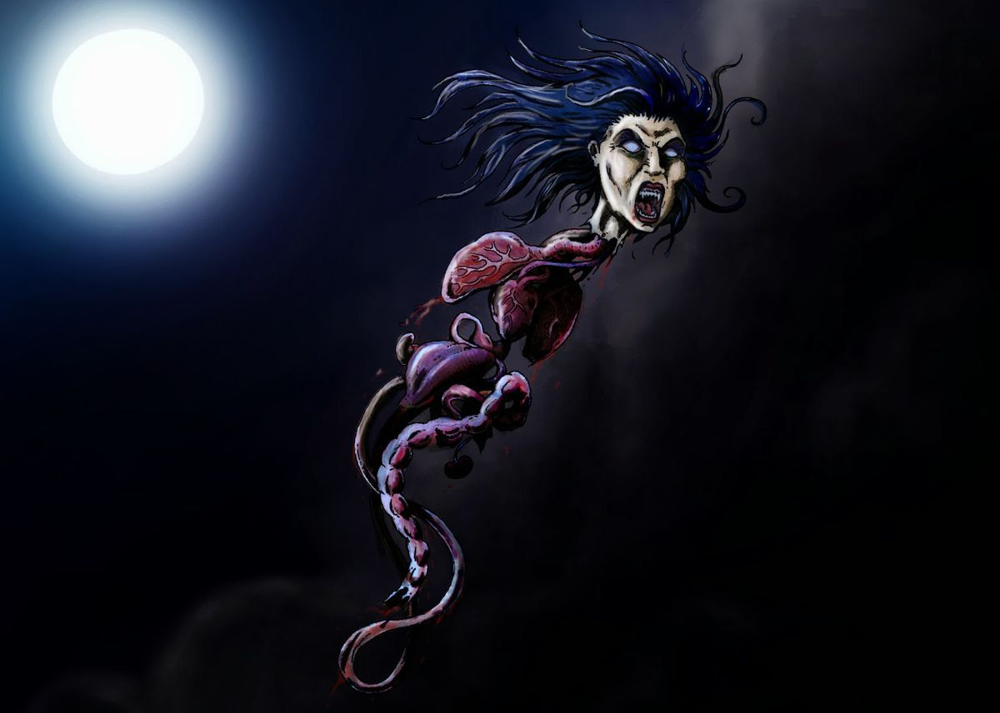
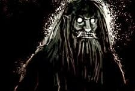
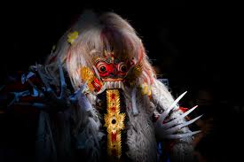
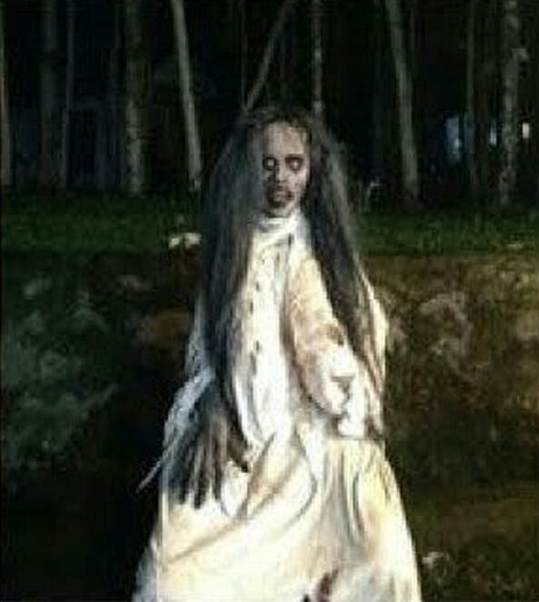

Tugas Akhir Growcaps
Page Web ini dibuat untuk memenuhi tugas akhir dari kegiatan Growcaps. Kami tahu bahwa halaman kami masih sederhana, namun kami sudah membuatnya dengan sungguh-sungguh.

DEDEMIT ASALOLE
Jasa Mengirim Bala
Dedemit Asalole merupakan website bertema horror dan supranatural yang menyediakan layanan pengiriman entitas mistis untuk kebutuhan berupa teror.Kami menyediakan pilihan hantu yang ingin anda kirim, silahkan scroll ke bawah.
Galeri
-

Kuntilanak
Kuntilanak adalah sosok hantu perempuan dalam cerita rakyat Nusantara yang dipercaya berasal dari arwah wanita yang meninggal saat hamil atau melahirkan. Ia digambarkan berambut panjang, berpakaian putih, dan sering muncul pada malam hari dengan suasana menyeramkan. Nama “kuntilanak” diyakini berasal dari bahasa Melayu yang berkaitan dengan perempuan dan anak, sehingga erat hubungannya dengan kisah kematian ibu dan bayi dalam tradisi masyarakat. -

Pocong
Pocong adalah sosok hantu dalam cerita rakyat Indonesia yang digambarkan sebagai mayat terbungkus kain kafan putih dengan ikatan di kepala dan kaki. Asal-usul pocong berasal dari tradisi pemakaman Islam di Indonesia, di mana jenazah dibungkus kain kafan sebelum dikuburkan. Dalam kepercayaan masyarakat, pocong muncul karena arwah orang meninggal belum tenang atau tali kafannya belum dilepas. Pocong sering digambarkan bergerak dengan melompat dan muncul pada malam hari di tempat sunyi atau angker. -

Genderuwo
Genderuwo adalah makhluk gaib dalam cerita rakyat Jawa yang digambarkan berbadan besar, berbulu lebat, dan menyeramkan. Genderuwo dipercaya tinggal di tempat sunyi seperti hutan, pohon besar, atau bangunan kosong. Dalam kepercayaan masyarakat, makhluk ini sering dikaitkan dengan gangguan mistis, suara aneh pada malam hari, dan kemampuan menyerupai manusia untuk menakuti orang. -
Suster Ngesot
Suster Ngesot adalah legenda horor Indonesia tentang arwah perawat berpakaian putih yang bergerak menyeret tubuhnya karena kakinya rusak atau buntung. Cerita ini berasal dari mitos rumah sakit tua dan kisah tragis seorang suster yang meninggal tidak wajar lalu bergentayangan. -

Kuyang
Kuyang adalah makhluk dalam cerita rakyat Kalimantan yang dipercaya berasal dari manusia yang mempelajari ilmu hitam. Pada malam hari, kuyang digambarkan dapat melepaskan tubuhnya dari bagian leher ke atas, sehingga hanya kepala dengan organ dalam yang terlihat melayang mencari mangsa, biasanya darah bayi atau ibu yang baru melahirkan. Cerita tentang kuyang berasal dari kepercayaan dan tradisi lisan masyarakat Kalimantan sebagai penjelasan mistis terhadap hal-hal yang sulit dijelaskan pada masa lalu, dan hingga kini masih menjadi bagian dari folklore daerah tersebut. -
Tuyul
Tuyul adalah makhluk gaib dalam cerita rakyat Indonesia yang biasanya digambarkan seperti anak kecil berkepala botak. Tuyul dipercaya dapat dipelihara oleh seseorang melalui ilmu gaib untuk mencuri uang atau barang berharga demi pemiliknya. Kepercayaan ini muncul dari tradisi mistis masyarakat dan sering dikaitkan dengan praktik pesugihan. -

Suanggi
Suanggi adalah makhluk atau sosok dalam cerita rakyat Maluku dan Papua yang dipercaya memiliki ilmu hitam. Suanggi sering digambarkan sebagai manusia yang dapat berubah menjadi makhluk gaib untuk mencelakai orang lain atau menyebabkan penyakit, dan menjadi bagian dari kepercayaan tradisional masyarakat setempat. -

Leak
Leak adalah sosok dalam kepercayaan Bali yang merupakan penyihir atau orang yang mempelajari ilmu hitam. Pada malam hari, Leak dipercaya dapat melepaskan kepalanya beserta organ dalamnya untuk terbang mencari mangsa, terutama bayi atau orang yang lemah. Dalam tradisi Bali, Leak sering dikaitkan dengan praktik ilmu pengiwa (ilmu hitam) dan pertarungan antara kebaikan dan kejahatan dalam cerita mistis. -
Banaspati
Banaspati adalah makhluk mistis yang sering digambarkan sebagai bola api terbang atau sosok manusia berapi. Dalam beberapa cerita Jawa, Banaspati dipercaya sebagai roh jahat yang suka mengganggu manusia pada malam hari. -

Sundel Bolong
Sundel Bolong adalah salah satu hantu perempuan paling terkenal di Indonesia.Sundel Bolong sering dikaitkan dengan perempuan yang meninggal saat hamil atau mengalami tragedi semasa hidupnya. Sundel Bolong muncul pada malam hari di tempat sepi seperti jalan sunyi, pohon besar, atau daerah angker.Sundel Bolong terlihat normal dan cantik dari depan, tetapi ketika berbalik terlihat lubang menganga lebar di punggungnya. -

Orang Bunian
Orang Bunian adalah makhluk gaib yang dikenal dalam cerita rakyat Melayu, terutama di wilayah Sumatra, Minangkabau, Kalimantan, dan Malaysia. Mereka dipercaya hidup di dunia paralel yang berdampingan dengan dunia manusia, biasanya di hutan lebat, gunung, atau tempat yang jarang dijamah orang. Orang Bunian tidak dapat dilihat oleh manusia biasa kecuali dalam keadaan tertentu. Ada yang percaya orang tersesat di hutan sebenarnya “disembunyikan” oleh Orang Bunian. -

Wewe Gombel
Wewe Gombel adalah makhluk gaib dalam cerita rakyat Jawa yang digambarkan sebagai wanita berwujud menyeramkan dengan payudara besar dan rambut panjang. Ia dipercaya suka menculik anak-anak yang ditelantarkan atau tidak diperhatikan orang tuanya, lalu “merawat” mereka di tempat persembunyiannya sampai orang tua menyadari kesalahannya. Dalam beberapa versi, anak yang diculik tidak disakiti, tetapi dijaga sampai diambil kembali oleh keluarganya.
Layanan Pengiriman Bala
Form Pemesanan Bala
Isi data dengan benar. Bala akan dikirim dalam 3×7 malam.
— Data Pemesan —
— Data Tujuan Bala —